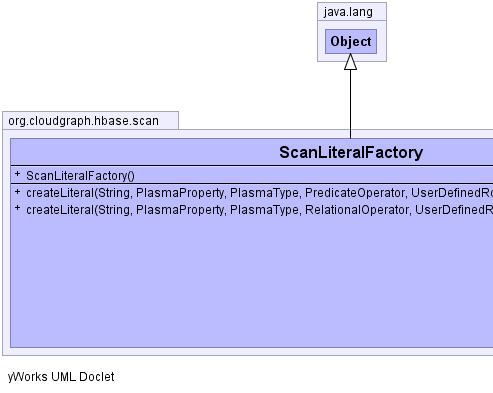
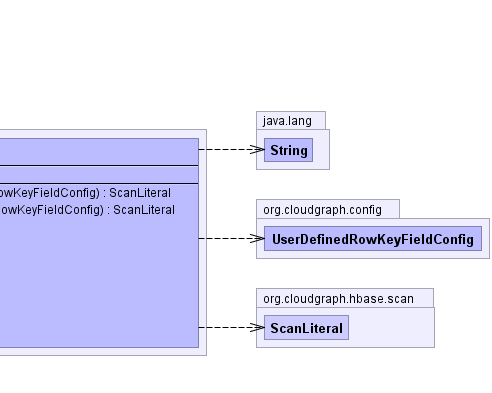
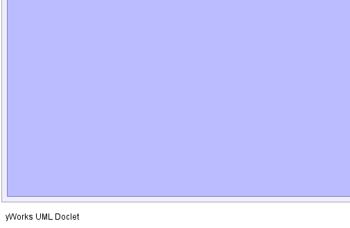
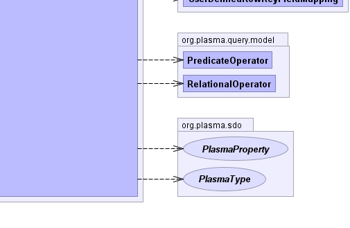

public class ScanLiteralFactory
extends java.lang.Object
ScanLiteral|  |  |
|  |  |
| Constructor and Description |
|---|
ScanLiteralFactory() |
| Modifier and Type | Method and Description |
|---|---|
ScanLiteral |
createLiteral(java.lang.String content,
org.plasma.sdo.PlasmaProperty property,
org.plasma.sdo.PlasmaType rootType,
org.plasma.query.model.PredicateOperator wildcardOperator,
UserDefinedRowKeyFieldMapping fieldConfig)
Creates and returns a data "flavor" and data type specific scan literal
given various configuration specific as well as predicate context specific
wildcard and logical operators.
|
ScanLiteral |
createLiteral(java.lang.String content,
org.plasma.sdo.PlasmaProperty property,
org.plasma.sdo.PlasmaType rootType,
org.plasma.query.model.RelationalOperator relationalOperator,
UserDefinedRowKeyFieldMapping fieldConfig)
Creates and returns a data "flavor" and data type specific scan literal
given various configuration specific as well as predicate context specific
relational and logical operators.
|
public ScanLiteral createLiteral(java.lang.String content, org.plasma.sdo.PlasmaProperty property, org.plasma.sdo.PlasmaType rootType, org.plasma.query.model.RelationalOperator relationalOperator, UserDefinedRowKeyFieldMapping fieldConfig)
content - the literal string contentproperty - the context propertyrootType - the graph root typerelationalOperator - the context relational operatorfieldConfig - the row-key field configurationpublic ScanLiteral createLiteral(java.lang.String content, org.plasma.sdo.PlasmaProperty property, org.plasma.sdo.PlasmaType rootType, org.plasma.query.model.PredicateOperator wildcardOperator, UserDefinedRowKeyFieldMapping fieldConfig)
content - the literal string contentproperty - the context propertyrootType - the graph root typewildcardOperator - the context wildcard operatorfieldConfig - the row-key field configurationCloudGraph® is a registered trademark of TerraMeta Software, Inc. Copyright © 2014 - All Rights Reserved.